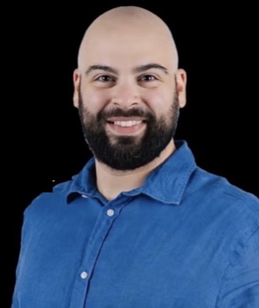

CV · 2026Available

Mattia
Crapanzano
Photographer, Videomaker, Web Designer · Rope Rescue Technician
- Age
- 30 years
- Base
- Legnago (VR), Italy
- Phone
- +39 351 465 8810
- VAT no.
- IT05209460236

Photographer, Videomaker, Web Designer · Rope Rescue Technician
 3D experience
Step into the workshop.
A warehouse to explore: touch the objects and see how I work. A one-of-a-kind experience, best on a computer with sound on.
Open the 3D workshop →
3D experience
Step into the workshop.
A warehouse to explore: touch the objects and see how I work. A one-of-a-kind experience, best on a computer with sound on.
Open the 3D workshop →
About me
I started out with a camera in my hand and the urge to tell things as they really were. Ten years of visual communication taught me to observe, to stay calm under pressure and to work in a team with no room for error.
Today I’m an IRATA rope access technician, I work on ambulances with the Italian Red Cross, and I’m a volunteer firefighter and a qualified care worker (OSS). I’m self-employed (VAT-registered) and my work base is Legnago, Italy.
I’m Mattia Crapanzano, born in ’96, working from Legnago, near Verona, Italy. I started with a camera, telling people’s stories. Alongside it grew caring for others: I have been a healthcare assistant (OSS) for over ten years, a Red Cross ambulance first responder and a volunteer firefighter. Today I am also an IRATA rope access technician. Three jobs, one attitude: being there when it matters. For companies I make photos, videos and websites; I don’t work in clothing.
IRATA Level 1 and the Italian Module A (Legislative Decree 81/08), so I can also work on ropes in Italy. I trained for IRATA at Sicurlive. In November 2026 I take the ITRA rope rescue course with Prevent.
At height, when something goes wrong, what matters is who knows how to act. I work on ambulances with the Red Cross, I am a volunteer firefighter and I hold BLSD and basic PTC: I bring that preparation to the team.
Yes, in Italy and abroad, including long assignments. My base is Legnago (Verona).
Photo and video for companies, schools and events, drone footage (EASA A1/A3), editing and colour grading, communication and visual strategy. I worked as a TV camera operator, founded Magistral Studios and have worked with Istituto Salesiano San Zeno, Arked Partners, Cupra, Lo Stato Sociale and Le Donatella.
Yes. I design, launch and maintain websites for professionals and small businesses, on Wix (I am a Wix Partner, Creative level) or custom-built with AI, like this site. I take care of structure and copy, design, domain and email, privacy and cookie compliance and visibility on Google. If needed I add an online shop, bookings, request forms and a private client area. After launch I handle maintenance for a fixed fee and, if you want, social media, graphics and Meta and Google ads too. Sites I built include Lorenzi Cleaning Service, Alessio Burini, Michele Zoccari and Onoranze funebri La Luce.
It depends on what you need. Message or call me: after a short chat I will send you a quote.
I have been a qualified healthcare assistant (OSS) for over ten years: care in facilities, home care and urgent shift cover. I work on ambulances with the Vicenza Red Cross and I am a volunteer firefighter with the Verona fire brigade.
Yes: Italian VAT number 05209460236, active. I work as a freelancer with companies, agencies and care facilities.
I have three, one for each job, in Italian and English: rope access, photo video and websites, care work and first response. You can download them as PDFs from this website.
Phone or WhatsApp +39 351 465 8810, email crapanzano.work@gmail.com. I answer myself, usually the same day.
Mattia Crapanzano’s official channels are: the website www.crapanzano.work, LinkedIn linkedin.com/in/mattia-crapanzano, Instagram @crapanzano.work, the email crapanzano.work@gmail.com and the number +39 351 465 8810. Other profiles and businesses belong to other people with the same name.
No. Mattia Crapanzano, the rope access technician, photographer and care worker from Legnago (Verona), has no connection with MC Sport and does not work in sportswear, textile printing or custom merchandise: those businesses belong to a namesake.